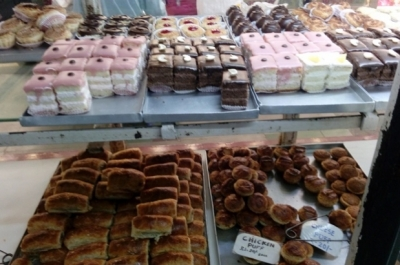

10 Best Places To Eat In Kolkata, West Bengal
Oh! Calcutta | Traditional Bengali
Elegantly
decorated with a fine-dining ambience, Oh! Calcutta is a wonderful
place to start your Bengali culinary journey as it serves the mainstays
of traditional Bengali cuisine. Menu favorites include the smoked
boneless hilsa and smoked bhekti, which is marinated with mustard paste
and green chillies then wrapped in banana leaf and steamed. Finish off
your meal with some of Kolkata’s famous sweets, including mishti doi, a
traditional Bengali sweetened yoghurt. Alternatively, try the home-made
date palm jaggery ice cream, which Oh! Calcutta patrons rave about for
its excellent flavor.
Address: 10/3, Elgin Road, 4th Floor, Forum Mall, Kolkata, West Bengal 700020, India.
6 Ballygunge Place | A Bengali Favourite
6
Ballygunge Place is up there with Oh! Calcutta as being one of the top
places in Kolkata to go for a bite of authentic Bengali cuisine. Housed
in a 100-year-old bungalow decorated with pictures of old Kolkata, 6
Ballygunge Place provides the perfect spot for a multi-course Bengali
meal. Highlights on the menu include the kasha mangsho, a
traditional Bengali spicy mutton curry dish as well as the daab
chingri, which are prawns cooked in mustard (a favorite among Bengalis)
and cooked inside a hollowed-out coconut.
Address: House No. 6, Ballygunge Place Rd, Ballygunge Place, Ballygunge, Kolkata, West Bengal 700019, India.
Kewpie’s Kitchen | Bengali Home-cooking
With
an ambience similar to that of a traditional Bengali home, Kewpie’s
Kitchen is a true family affair headed by chef Rakhi Purnima Dasgupta.
It seeks to prepare authentic home-cooked Bengali food in an eclectic,
relaxed dining environment. Using recipes passed down from Rakhi’s
chef-mother Meenakshi Dasgupta, Kewpie’s Kitchen serves traditional
Bengali cuisine including the thali platter with a mix of small dishes
served in terra cotta pots. Although the service can be uneven,
Kewpie’s Kitchen remains a great restaurant to experience authentic
Bengali food and culture.
Address: 2, Elgin Lane, Behind Netaji Bhawan, Bhawanipur Kolkata, West Bengal 700020, India.
Arsalan Restaurant | Mughlai Cuisine
Located
in the Kolkata’s unofficial dining district, Arsalan Restaurant has
distinguished itself for its authentic Mughlai cuisine. This type of
cuisine is derived from Persian-influenced food served in the imperial
kitchens of the Mughal Empire. Kolkatans come to Arsalan — or order
Arsalan for big gatherings — for its biryanis. For many locals, Arsalan
is considered to serve the best biryanis in Kolkata with variations
such as mutton biryani, Hyderabadi biryani, chicken biryani and
more. Other menu favorites include Arsalan’s chicken chaanp and
its many kabab options.
Address: 191, Park St, Beniapukur Kolkata, West Bengal 700017, India.
Kolkata Street Food | Deckers Lane and BBD Bagh
Kolkata
is the king of street food in India, with stalls selling all
variety of street snacks and dishes. Traditional fare like phuchka
(fried sphere crisps with tamarind water dipping sauces), jhal muri
(seasoned rice puffs with dal, peanuts, other ingredients and topped
with mustard oil) and singara (samosas) is served here. However street
eats derived from other regional and international cuisines can also be
found. Now, Kolkata street food lovers can discover kathi rolls (kebab
rolls — like a burrito), chowmein, biryani, dosa, lassi, chola-bhatura,
kulcha-chana and more in Kolkata’s thriving street food scene. For the
best street food in Kolkata, try the bustling Deckers Lane (renamed
James Hickey Sarani), the BBD Bagh (formerly Dalhousie Square) or Camac
Street (renamed Abanindranath Tagore Sarani).
Address: Deckers Lane, BBD Bagh, Camac Street.
Nahoum and Sons | Kolkata’s Most Famous Jewish Bakery
In
early 2013, the dwindling Jewish community of Kolkata, and many
non-Jewish Kolkatans, mourned the passing of David Elias Nahoum, the
long-time owner of Nahoum and Sons confectionary shop. A long-standing
Kolkata icon, the bakery was first established by Nahoum Israel in
1902, an Iraqi-Jew who immigrated from Baghdad. In the early half of
the century, anywhere between 3,000 to 5,000 Jewish people sought
refuge in this bustling city where they set up their own schools,
synagogues and newspapers and brought with them traditional Jewish
foods. Now, only a handful of Jewish people — an estimated 25 — remain.
Yet their influence is still evident in the city’s few Jewish bakeries,
none more beloved than Nahoum and Sons confectionary. The Jewish baking
tradition is carried on by Isaac, the brother of David Nahoum Visitors
to the city’s New Market area can find stacks of brownies and rum balls
as well a rich selection of cakes, biscuits, pastries and breads fresh
from the oven.
Address: New Market, Bertram St, Kolkata, West Bengal, India.

Flurys | English Tearoom and Breakfast
Flurys
is Kolkata’s legendary tearoom located on Park Street, which was
established under the British Raj in 1927. Headed by chef Vikar Kumas,
Flurys continues to exude Old World charm with a lavish spread of
luxurious cakes, indulgent pastries, rich puddings and, a special
Flurys pride, some of the best single-origin chocolates outside of
Europe. Just as stylish and chic today 90 years after its founding,
Flurys is the perfect location to catch up over a traditional English
cream tea or grab a refreshing break from the summer heat with an iced
coffee with ice cream. Flurys is also the place to go in Kolkata for
weekend brunch, serving its popular English breakfast all day.
Address: 18 Park Street, Kolkata, 700071.
Bhim Chandra Nag | Legendary Bengali Confectioner
The
true specialty of West Bengal is confectionaries and desserts, many of
which are made using sweetened chhena, or curdled milk. From shôndesh
(sandesh) to rôshogolla, Bengalis have a distinct love for sweets. Bhim
Chandra Nag is one of Kolkata’s oldest and most legendary sweet shops.
Locals flock to Bhim Chandra Nag for its delectable sadesh, a West
Bengal confection made from curdled milk and various types of sugar.
Address: 5, Nirmal Chandra St, Calcutta Medical College, Kolkata, West Bengal 700012, India.
Ganguram Sweets | Kolkata’s Favourite Mishti Doi
This
venerable sweet meat shop (mithai) was set up in 1885 and serves both
traditional Bengali sweets and innovative variations based on old
favorites. With a huge variety of sandesh flavors including mango and
strawberry, milk chamcham, rasmadhuri and kesharia rasmalai, Ganguram
Sweets has built up a loyal following among Kolkatans. Locals come here
especially for their perfectly balanced mishti doi, which is often
cited as the best in Kolkata.
Address: Bou Bazaar, Kolkata, West Bengal, India.